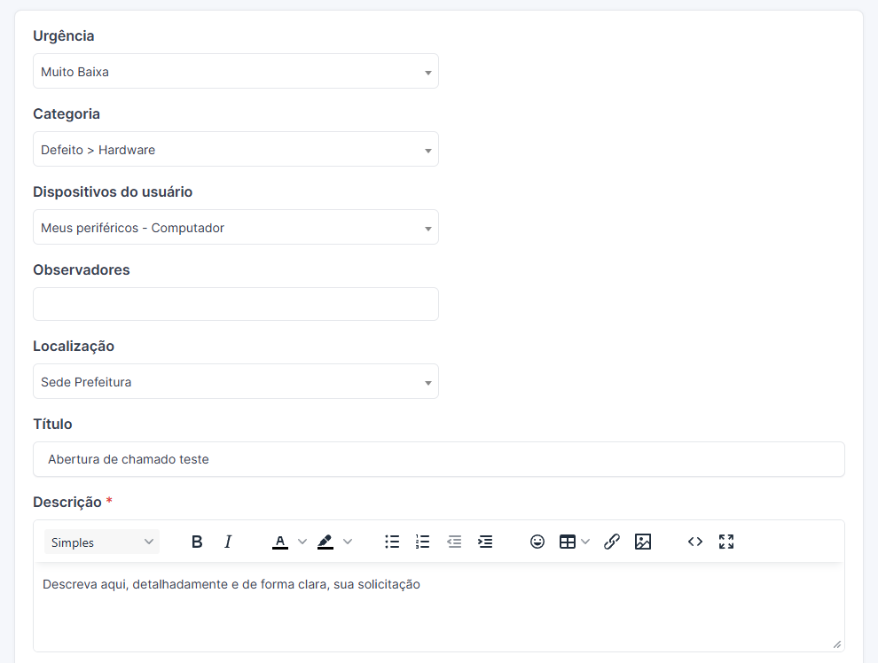

Como abrir um chamado no GLPI
O caminho para pedir ajuda à TI quando o ChicoChat+ estiver fora do ar.
- 1Acesse o GLPI
- 2Entre com o seu usuário de rede
- 3Abra o Catálogo de serviços
- 4Preencha o formulário
- 5Envie e acompanhe
Antes de começar
Quando usar este caminho
O canal oficial de atendimento da TI é o ChicoChat+. Abra o chamado direto no GLPI quando o Chico estiver fora do ar.
O que é o GLPI
O sistema de chamados usado pela equipe de TI da Prefeitura.
Tudo registrado
Cada pedido recebe um número e fica documentado.
Fácil de acompanhar
Você vê a situação do seu chamado no próprio sistema, quando quiser.
Tenha em mãos
- 1
Seu usuário e sua senha de rede
São os mesmos que você usa para entrar no computador.
- 2
O IP da máquina
Na área de trabalho, clique duas vezes no arquivo MostrarIP.bat. Se o computador com problema não liga, avise isso na descrição.
- 3
O que está acontecendo
O que você vê, desde quando, se algo mudou antes e o que já tentou.
Neste guia
- Acesse e faça login3
- Abra o Catálogo de serviços4
- Preencha o formulário5
- Envie e acompanhe6
Passos 1 e 2
Acesse e faça login
Funciona em qualquer navegador, como Chrome, Firefox ou Edge. Digite o endereço suporte.pedroleopoldo.mg.gov.br e a tela de entrada vai abrir.
- 1
Usuário
Seu usuário de rede, o mesmo que você usa para entrar no computador.
- 3
Origem de login
Mantenha Prefeitura selecionado.
- 2
Senha
Sua senha de rede, a mesma do computador.
- 4
Entrar
Clique para acessar o sistema.
Passo 3
Abra o Catálogo de serviços
Depois do login, a tela inicial abre. São dois cliques até o formulário.
Clique em Catálogo de serviços
Fica no menu azul, no alto da tela.
Escolha Reportar um problema
O formulário do chamado abre em seguida.
Um atalho
A tela inicial do GLPI também traz o cartão Reportar um problema, logo abaixo da busca.
Passo 4
Preencha o formulário
Sem o Chico para fazer o resumo, é a sua descrição que o técnico vai ler. Quanto mais detalhe, mais rápido o atendimento.

1
2
3
4
5
6
7
- 1
Urgência
A prioridade do pedido.
- 5
Localização
Onde você ou o equipamento está.
- 2
Categoria
O tipo de problema, como Defeito > Hardware.
- 6
Título
Um resumo curto e objetivo.
- 3
Dispositivos do usuário
O equipamento com problema, se estiver na lista.
- 7
Descrição (obrigatória)
O problema, com detalhes.
- 4
Observadores
Quem mais deve acompanhar, se houver.
O que escrever na descrição
O que acontece, desde quando, se atinge só você ou o setor e o que já tentou. Inclua também o seu setor e o IP da máquina, que o técnico precisa para atender.
Passo 5
Envie e acompanhe
Revise o que preencheu e clique em Enviar. A confirmação aparece na tela, e o chamado já está com a equipe de TI.
Ver meus chamados (1) leva à lista abaixo, que também fica no menu Chamados.
- 2
ID
O número de protocolo do seu chamado.
- 3
Status
Em que etapa o atendimento está.
- 4
Última atualização
A última vez que você ou o suporte editou o chamado.
Atualizações por e-mail
O GLPI avisa por e-mail quando o seu chamado é atualizado.
Trabalhamos a todo vapor para responder o mais rápido possível.
Quando o ChicoChat+ voltar, use-o nos próximos pedidos: é o canal oficial de atendimento da TI.
Abrir o ChicoChat+